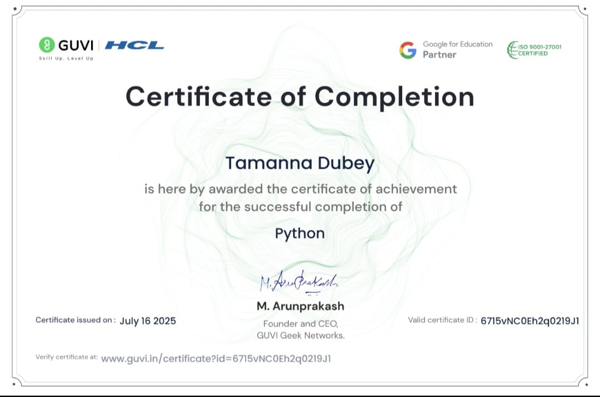
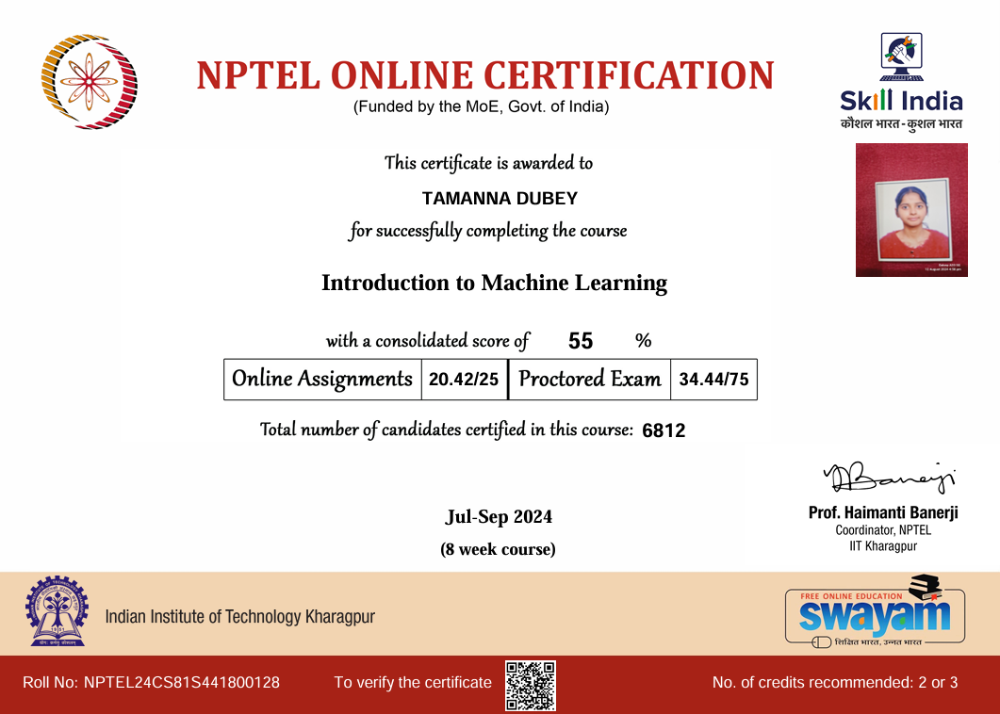
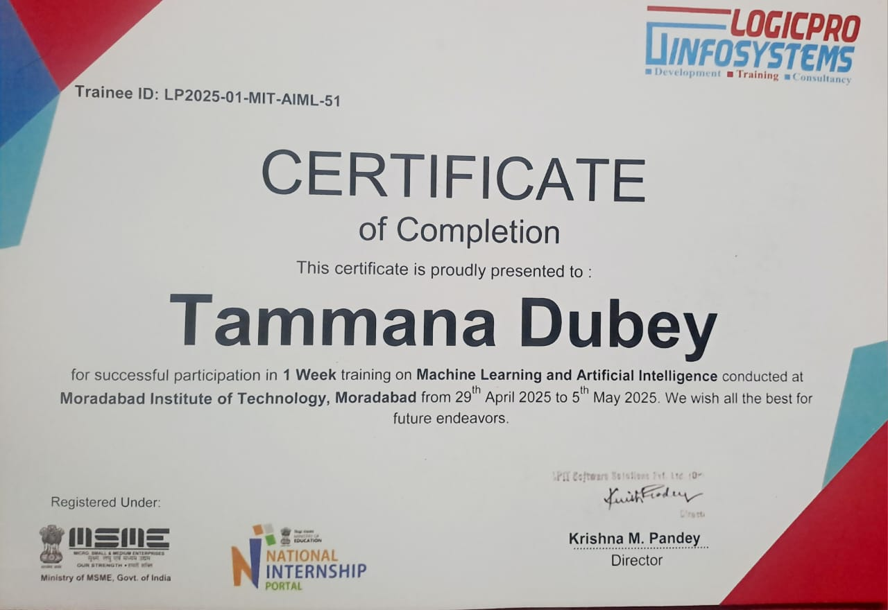
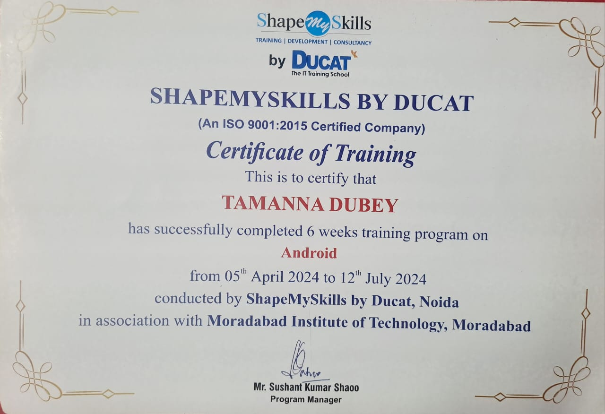
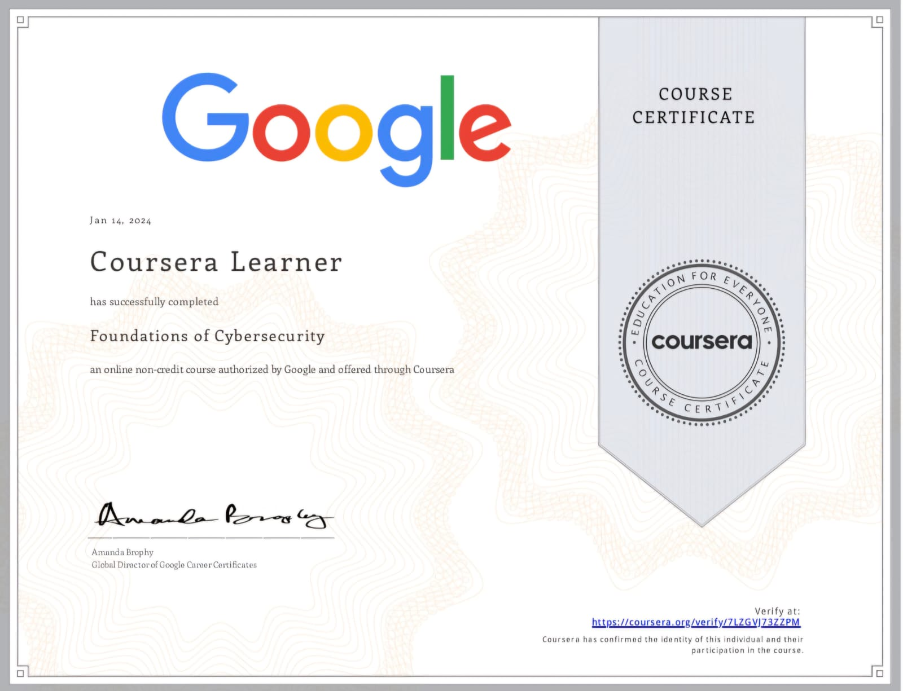
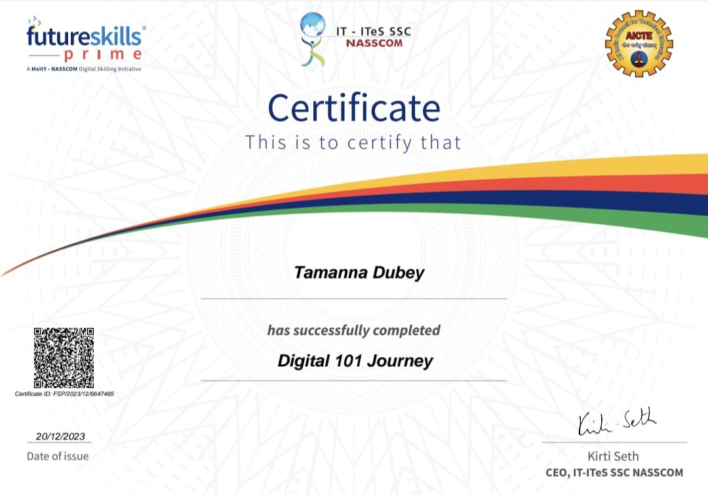
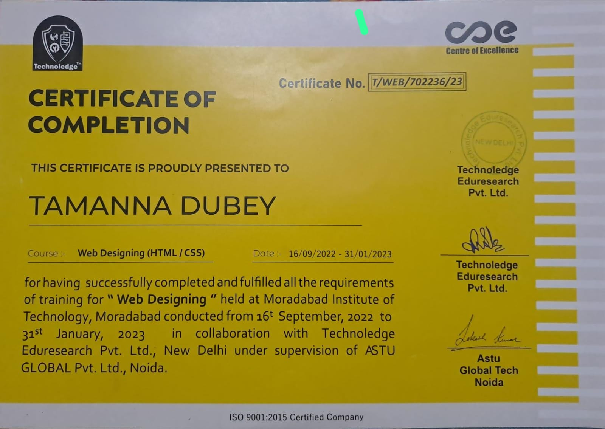

Certifications & Training
Python Programming Certification – GUVI x HCL x Google for Education
Python
I completed a Python Programming certification from GUVI Geek Networks in collaboration with HCL and Google for Education. This course helped me build a solid foundation in Python syntax, control structures, data types, functions, and object-oriented principles—skills that I now apply in both machine learning and web development projects. Issued on July 16, 2025 and verified under Certificate ID: 6715vNC0Eh2q0219J1, this credential reflects my dedication to growing as an AI and full-stack developer. It also highlights my ability to work with industry-relevant tools in a self-paced, structured environment.
Machine Learning Certification – NPTEL, IIT Kharagpur
Introduction to Machine Learning
Completed an intensive 8-week certification on core machine learning principles offered by IIT Kharagpur via NPTEL. The course covered supervised and unsupervised learning, algorithmic foundations, and real-world applications. Guided by Prof. Haimanti Banerji, I gained hands-on experience in model design and evaluation, reinforced through graded assignments and a proctored exam. This certification demonstrates both my technical competence and dedication to growing in the field of AI.
Machine Learning & AI Training – MIT Moradabad | LogicPro Infosystems
Machine Learning & Artificial Intelligence
I participated in a 1-week intensive training on Machine Learning and Artificial Intelligence organized by LogicPro Infosystems, held at Moradabad Institute of Technology from April 29 to May 5, 2025. The program was recognized under the Ministry of MSME and the National Internship Portal, and offered practical exposure to real-world ML concepts and AI workflows. Guided by industry professionals, I gained valuable insight into data modeling, algorithmic logic, and intelligent systems—skills that I continue to apply in personal and academic projects. This certificate reflects my proactive approach to hands-on learning and commitment to advancing in the tech domain.
Android Development Training – ShapeMySkills by Ducat & MIT Moradabad
Android
I successfully completed a 6-week Android Development training program conducted by ShapeMySkills by Ducat, an ISO 9001:2015 certified company, in association with Moradabad Institute of Technology. From April 5 to July 12, 2024, I built practical skills in designing, developing, and deploying Android applications. This experience strengthened my understanding of user interface design, Java-based mobile development, and app functionality. Supervised by industry mentors, the training provided both academic structure and hands-on exposure, expanding my foundation for future mobile-based projects.
Foundations of Cybersecurity – Google via Coursera
Coursera Learner
I successfully completed the “Foundations of Cybersecurity” course offered by Google through Coursera on January 14, 2024. This program introduced key concepts such as threat landscapes, security frameworks, risk management, and ethical responsibilities in cybersecurity. Endorsed by Amanda Brophy, Global Director of Google Career Certificates, this certification reflects my initiative to understand secure technology environments, safeguard user data, and recognize system vulnerabilities—critical skills for both web development and AI-driven applications. Verified under ID: ZLGVJ73ZZPM, it adds depth to my commitment to responsible and security-conscious design.
Digital 101 Journey Certification – FutureSkills Prime, MeitY-NASSCOM
Digital 101 journey
I earned a Digital 101 Journey certification through FutureSkills Prime, a digital skilling initiative backed by MeitY and NASSCOM. This foundational course introduced me to core digital concepts, tools, and transformation strategies essential for thriving in tech-enabled environments. Issued on December 20, 2023 and verified under Certificate ID: FSP2023/12/6647485, this achievement underscores my commitment to evolving alongside emerging technologies and staying future-ready in AI and web development. It also reflects my proactive learning mindset and alignment with national initiatives to foster digital growth.
Web Designing Certification – Technoleedge & ASTU Global | MIT Moradabad
Web Designing(HTML/CSS)
I earned a Web Designing certification for completing a training program focused on HTML and CSS fundamentals. Conducted from September 16, 2022 to January 31, 2023 at Moradabad Institute of Technology, this initiative was organized by Technoleedge Eduresearch Pvt. Ltd. and supervised by ASTU Global Tech, Noida. Through this ISO 9001:2015 certified program, I developed a strong understanding of semantic HTML, responsive layouts, and modern CSS styling—skills that laid the foundation for my frontend development journey and creative UI/UX implementations.